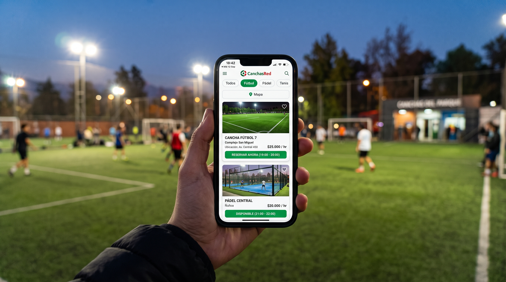

PF
Paola Franco
Co-Fundadora & Desarrolladora Frontend
Conectamos a deportistas y administradores en una sola plataforma para hacer del deporte una experiencia accesible, organizada y sin fricciones.
Complejos deportivos impulsados en todo Chile
Canchas activas con gestión y reservas automáticas
Años de experiencia integrando tecnología y deporte

Surgimos con el propósito de resolver los problemas de comunicación en los centros deportivos, eliminar la incertidumbre al momento de arrendar y ayudar a los complejos a profesionalizar la gestión de sus espacios.
Con el tiempo, comprendimos que muchos de los desafíos que enfrentan los recintos estaban profundamente conectados entre sí. La disponibilidad de horarios, el cobro transparente, el mantenimiento de las instalaciones y la fidelización de los jugadores no podían abordarse de forma aislada.
Por eso creamos CanchasRed: un ecosistema donde los dueños maximizan el uso de sus canchas y los deportistas encuentran su lugar ideal para jugar en cuestión de segundos.

Las desarrolladoras detrás de la plataforma CanchasRed:
Co-Fundadora & Desarrolladora Frontend
Co-Fundadora & Desarrolladora Fullstack